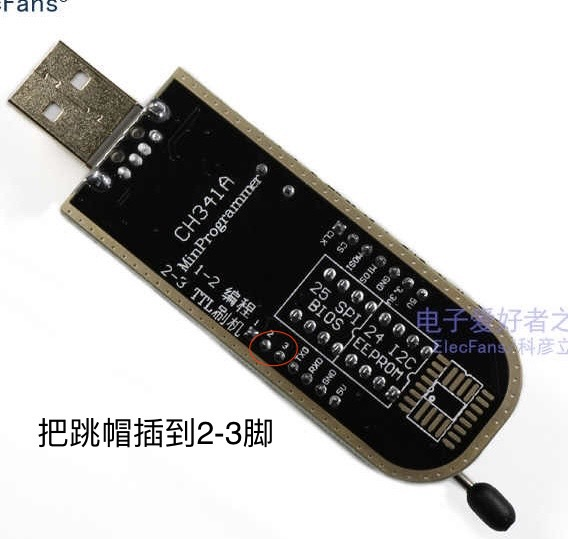
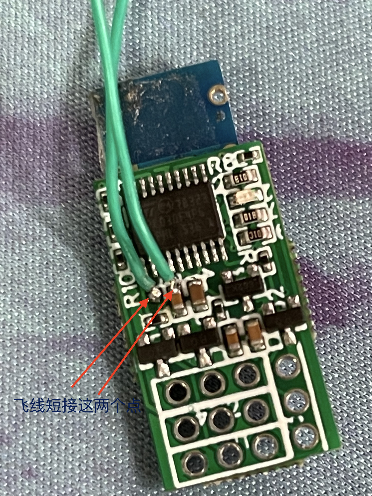
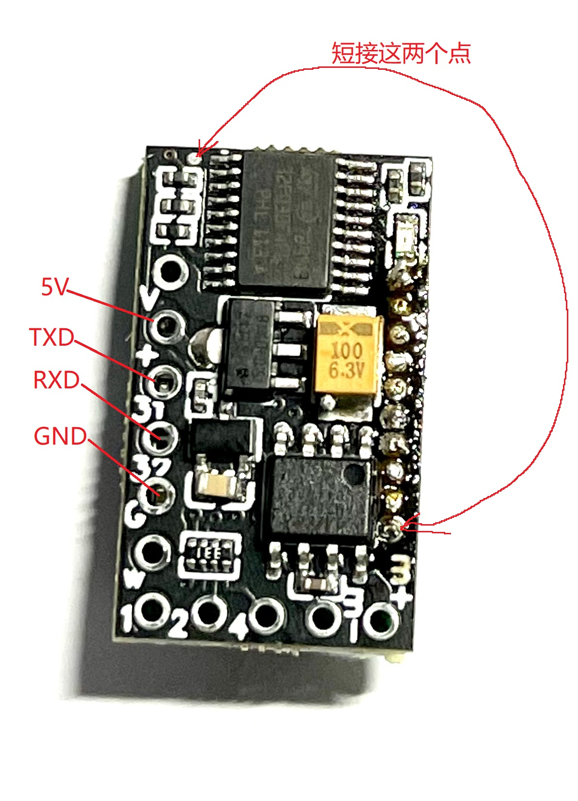
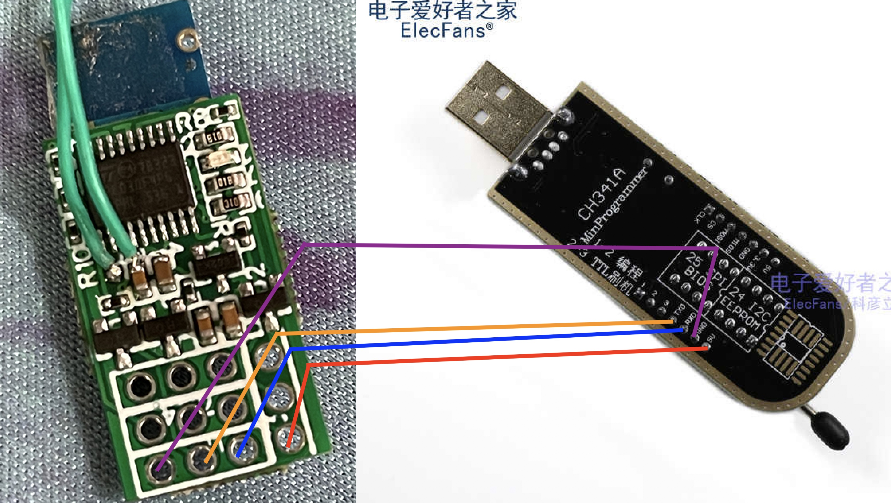
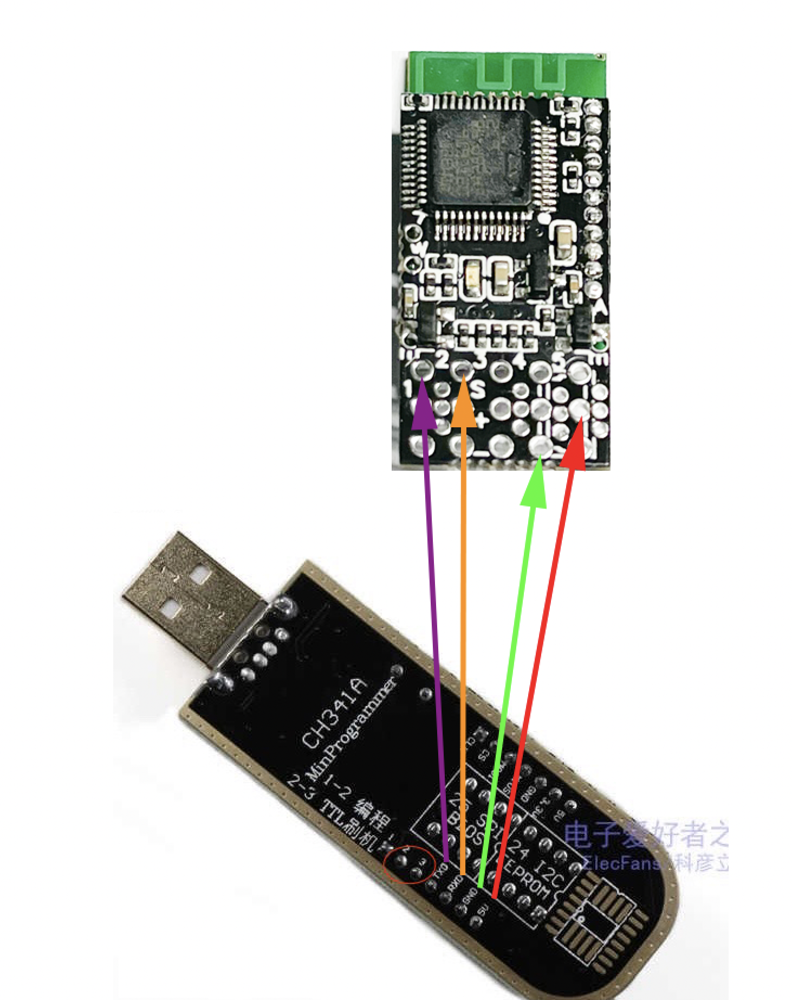
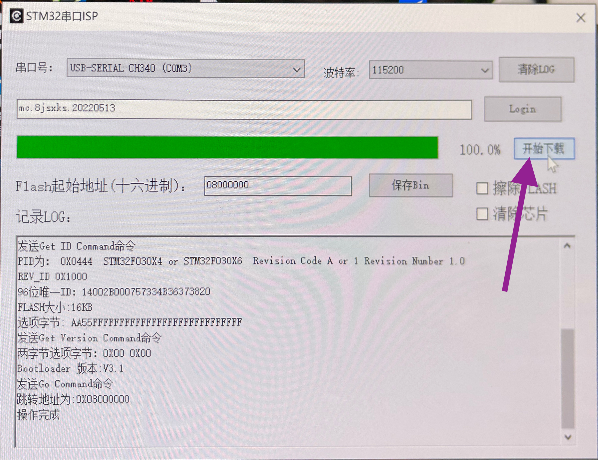

1. 安装ch341的驱动程序
请找ch341卖家要或百度找
2.ch341的跳线跳到usb To ttl
如能本身只有TTL刷机的功能的板子，像CH340一般只有usb to ttl的功能，这一步可以不做

3.接收机飞线，
这两个点很近，也可以试下用镊子或一字批，直接短接，上电的时候，这两个点短接才会进入刷机模式。
一代接收机：

二代接收机，飞机用的：

二代接收机，车用的：

4.连接5v, RX, TX GND 到接收机
一代接收机：

二代接收机，飞机用：

二代接收机，车用：
5.下载stm32isp程序安装
链接找卖家要， 要是安装不上的话，请删除旧的同名程序，然后再安装。
6. 接上ch341到电脑
7. 打开stm32isp程序
8.输入密码，密码找卖家要. 点一下login按钮

要看到Login OK的字样，要是failed了，应该是密码不对，要找卖家要。
9. 点击下载

要是出错，勾上清除芯片搞一次，搞完后，不勾清除芯片来一次。
这里要是没有反应的话，
9.1. 请检查usb线的线的长度，尽量短，尽量不要有延长线
9.2. 检查接线有没有反。
9.3 重启接收机，重启程序
9.4 修改波特率低些。